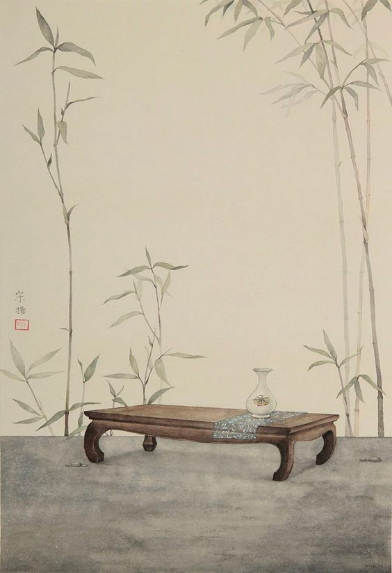
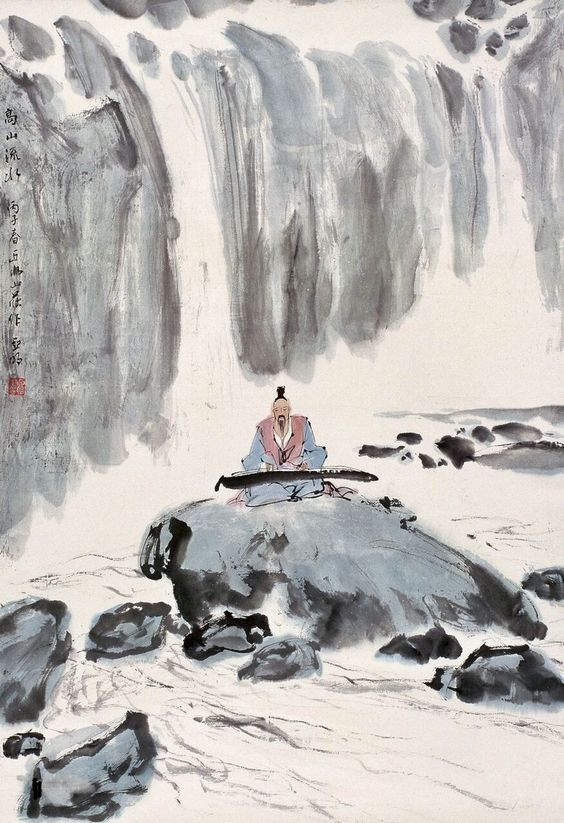
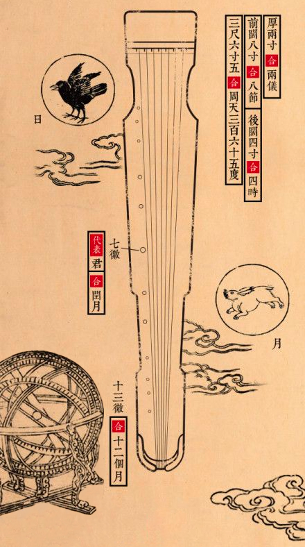
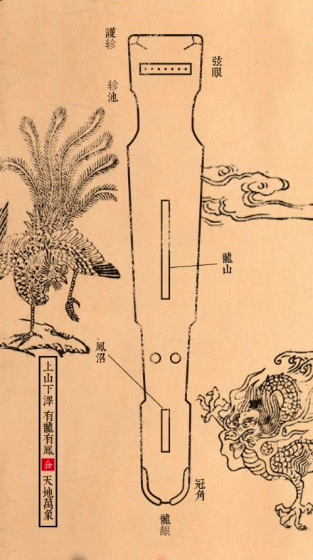
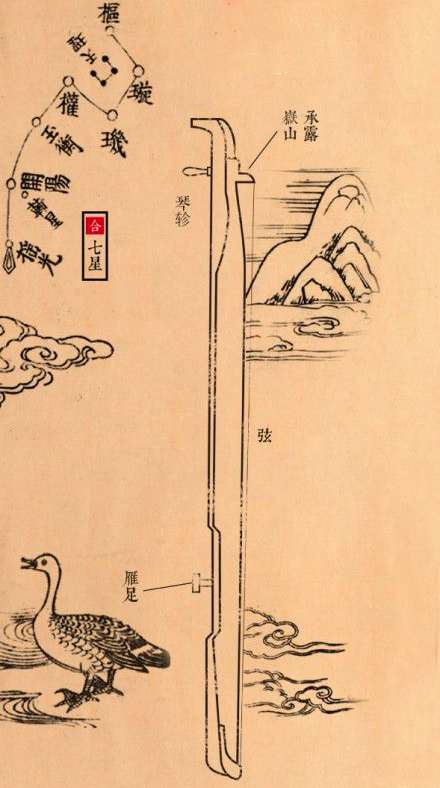
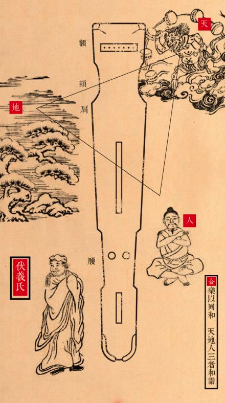
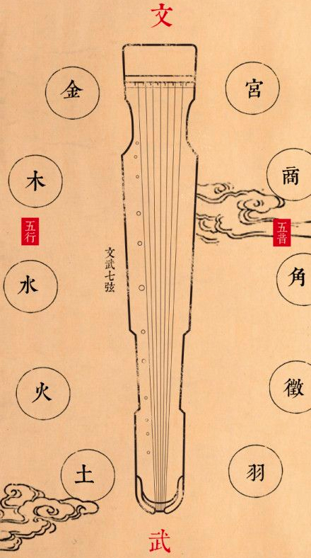
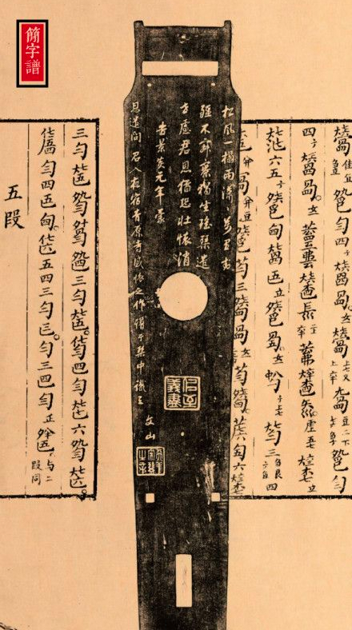
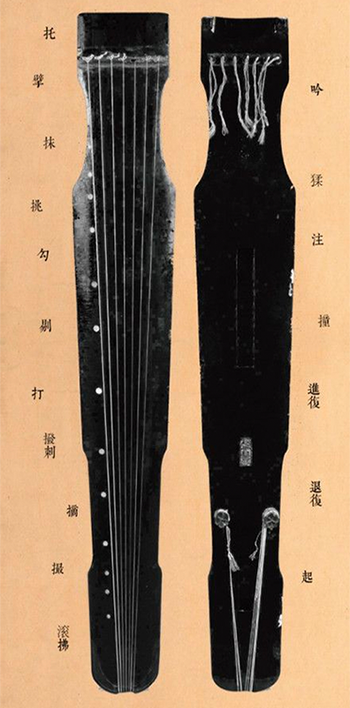
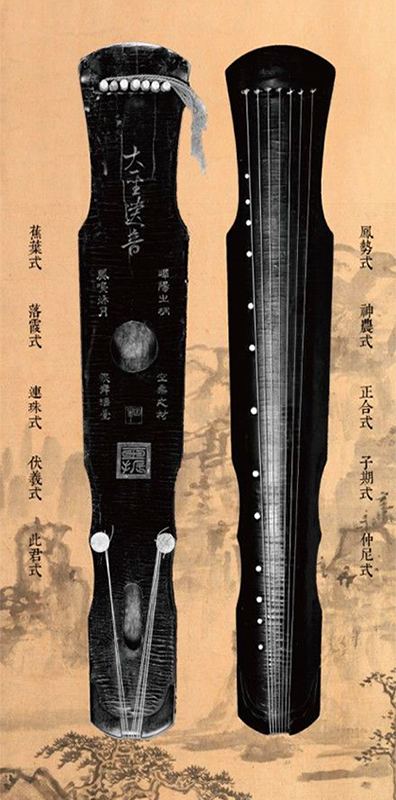

The guqin (Chinese: 古琴) is a plucked seven-string Chinese musical instrument. It's over 3,000 years old, and has traditionally been favoured by scholars and literati as an instrument of great subtlety and refinement, as highlighted by the quote "a gentleman does not part with his qin or se without good reason,"as well as being associated with the ancient Chinese philosopher Confucius. It is sometimes referred to by the Chinese as "the father of Chinese music" or "the instrument of the sages".
Since ancient times, "qin"(“琴”) has been its special reference, and it has been renamed Guqin since the 1920s in order to distinguish it from the piano (Chinese: Gang Qin)
The qin is the most exalted musical instrument in ancient Chinese culture, ranking first among the four arts of "Qin, chess, calligraphy and painting"(琴棋书画).
On 7 November 2003, UNESCO announced that the Chinese guqin was selected as an Intangible World Cultural Heritage. In 2006, guqin was listed in the List of National Non-material Cultural Heritage in China. In 2010, a Song period guqin was sold for $22 million, making it the most expensive musical instrument ever sold.
What's Guqin?



Construction 古琴结构




